Week 13: Words, Words, Words
A novel is just a very long string. This week we asked: what can you compute from that string? The answer turned out to be a lot — frequency charts, character maps, sentiment arcs, named-entity networks — and the pipeline for getting there is exactly the kind of systematic data transformation you’ve been building all term. We also discovered that understanding English well enough to process it automatically is surprisingly hard, which is why spaCy exists.
Your Growing Toolkit
- Representation — how we encode meaning
- Collections — how we group things
- Control flow — how we make decisions and repeat
- Functions — how we name and reuse logic
- Abstraction — how we hide complexity
- Efficiency — how we measure cost
This week: Text as Data + NLP pipelines + Named Entity Recognition — language is messy; we build machinery to tame it!
Tuesday: Visualizing Literature
What Can a Novel Look Like?
We opened with a question: if a novel is just text, what can we see in it? Researchers in computational literary studies have built some stunning visualizations that reveal structure invisible to a casual reader.
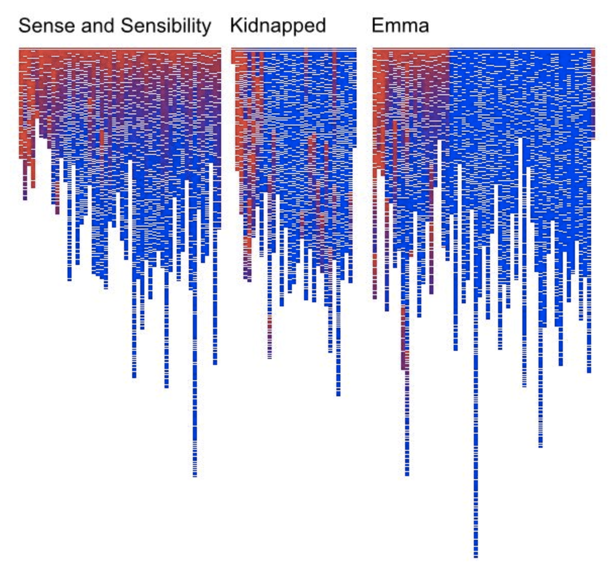
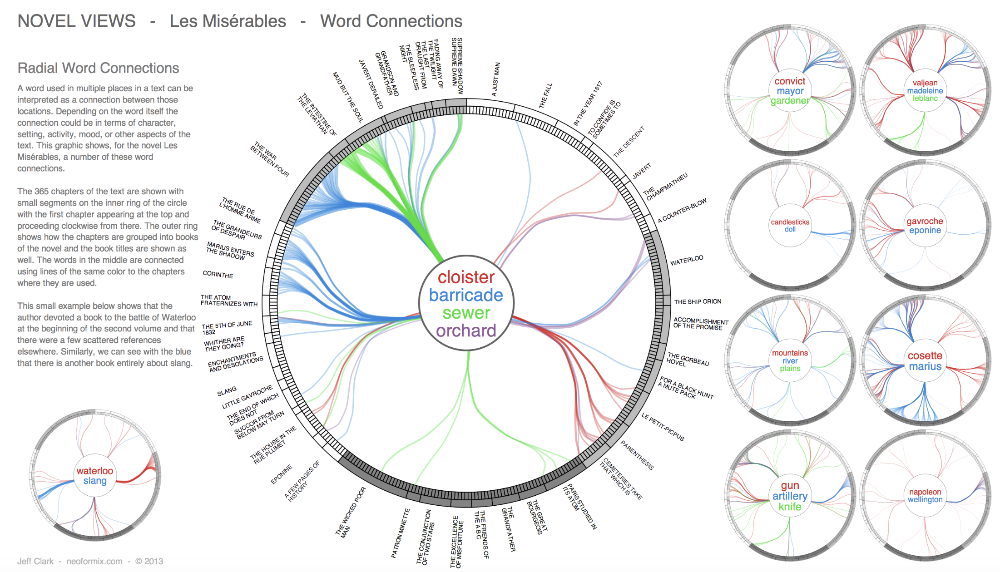

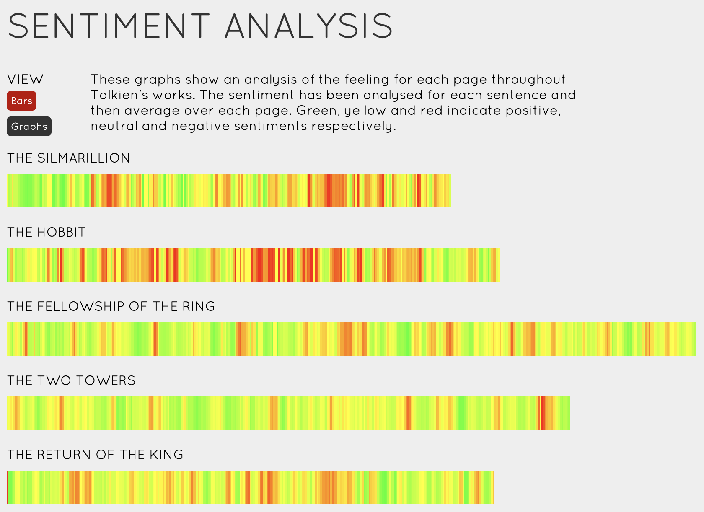
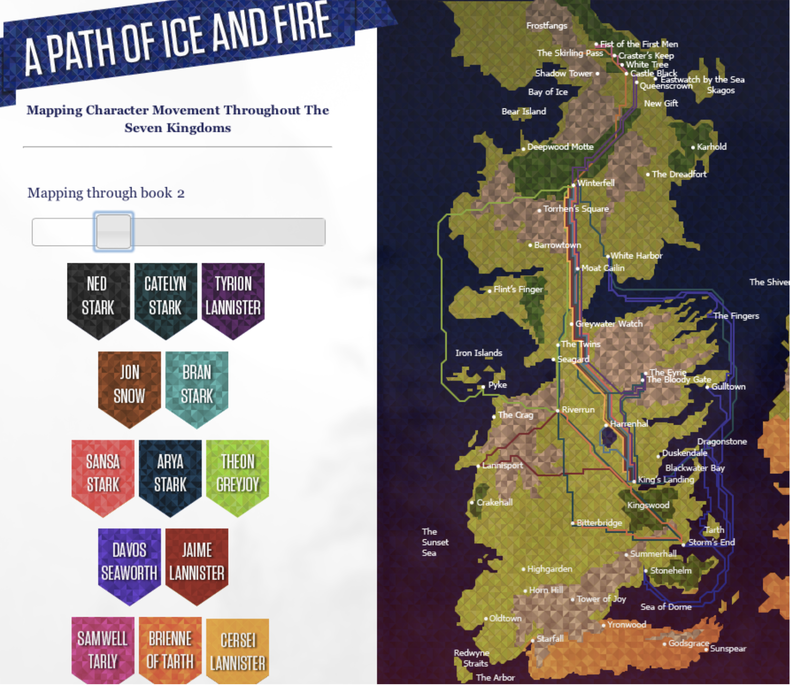
“Novels are full of new characters, new locations and new expressions. The discourse between characters involves new ideas being exchanged. We can get a hint of this by tracking the introduction of new terms in a novel.” — Matthew Hurst
The Text-as-Data Pipeline
A novel is just characters. Before we can do anything interesting, we need to clean and structure the text. Here’s the full pipeline:
- Load the text from a
.txtfile into one big Python string - Tokenize: split into words (and punctuation, and numbers…)
- Preprocess — four sub-steps in sequence:
- Lowercase — unify “Valor” and “valor” into one tally
- Remove punctuation — drop tokens that aren’t alphabetic (handles “father.”, “!”, “Dr.” correctly)
- Remove stopwords — discard common, uninformative words (“the”, “and”, “was”) using spaCy’s curated list
- Lemmatize — reduce words to their base form: “going” → “go”, “eaten” → “eat”, “running” → “run”
- Count frequencies with
Counter - Visualize as a bar chart
- Interpret: what do the counts actually tell you about this book?
Watching the Pipeline Work
Here’s what happens to our mystery text at each stage. Each bar chart shows the 30 most common items:
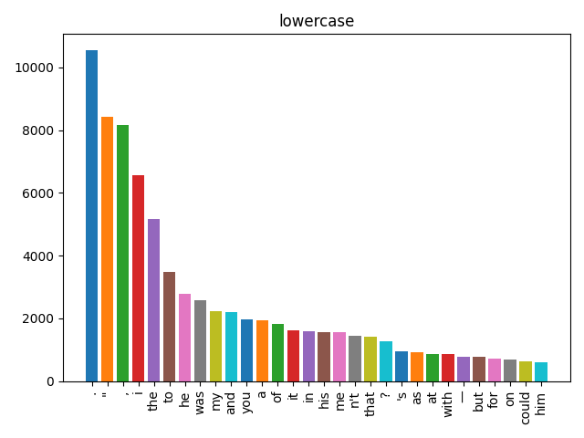
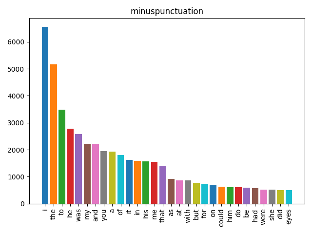
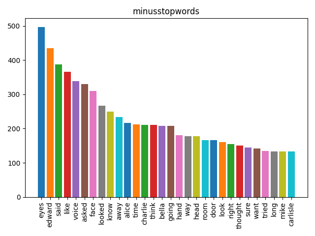
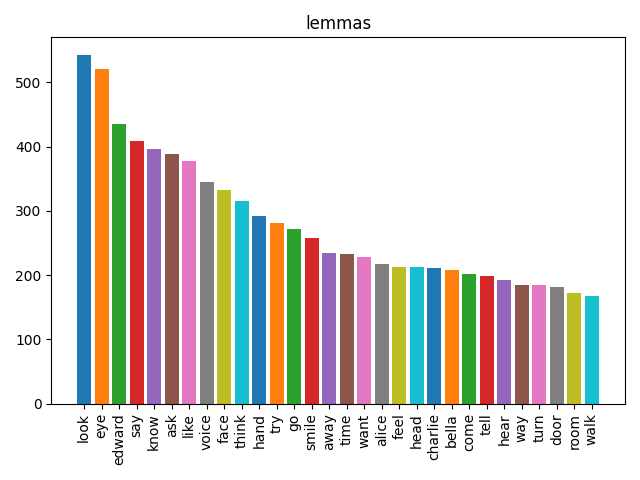
The sequence lowercase → punctuation → stopwords → lemma matters. Stopword lists are lowercase, so you must lowercase first. Lemmatization works better on clean alphabetic tokens, so remove punctuation before you lemmatize. The order isn’t arbitrary — each step prepares the data for the next.
Tokenization: Harder Than It Looks
Splitting “I want to go” into ['I', 'want', 'to', 'go'] seems trivial. But what about:
"Astrology. The governess was always
getting muddled with her astrolabe, and when she got specially
muddled she would take it out of the Wart by rapping his knuckles."spaCy’s tokenizer produces:
['Astrology', '.', 'The', 'governess', 'was', 'always', 'getting',
'muddled', 'with', 'her', 'astrolabe', ',', 'and', 'when', 'she',
'got', 'specially', 'muddled', 'she', 'would', 'take', 'it', 'out',
'of', 'the', 'Wart', 'by', 'rapping', 'his', 'knuckles', '.']Key insight: the period after “Astrology” is its own token — not glued to the word. The same is true of commas. This is why removing punctuation is a separate step: the tokenizer has already isolated them. And “Dr.”, “$3.50”, and “!” all work correctly because the tokenizer knows about abbreviations and special characters.
Stopwords: Common ≠ Useful
SpaCy comes with a list of ~300 English stopwords compiled from large corpora — words so common they add noise rather than signal: “the”, “a”, “and”, “was”, “of”, “in”, “it”, “to”, “with”…
from spacy.lang.en.stop_words import STOP_WORDS
words_without_stopwords = [w for w in words if w not in STOP_WORDS]The more sophisticated approach is tf-idf (term frequency–inverse document frequency): instead of a fixed stopword list, it automatically downweights words that are common across all your documents. A word that appears in every book is not informative about this book.
Lemmas: The Root of the Matter
A lemma is the dictionary form of a word:
| Raw token | Lemma |
|---|---|
| going | go |
| went | go |
| running | run |
| ran | run |
| eaten | eat |
| better | good |
Without lemmatization, “go”, “goes”, “going”, “went”, and “gone” each get their own tally. With lemmatization, they all count toward the same root. This gives a much more accurate picture of what ideas dominate the text.
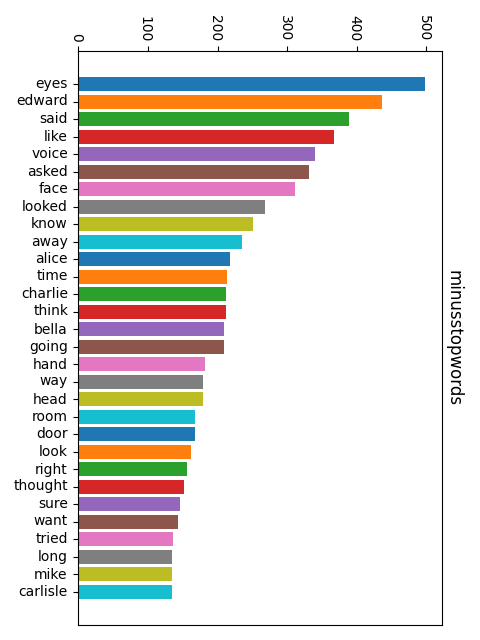
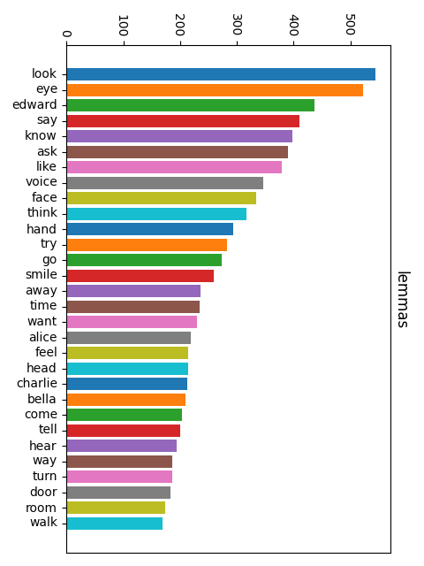
Thursday: Parts of Speech + Named Entities
spaCy’s Richer Picture
Last time, we counted words. Today we went deeper: spaCy doesn’t just split your text into tokens — it understands them. When you run nlp(text), every token gets labeled with its grammatical role and its role in named entity spans.
import spacy
nlp = spacy.load("en_core_web_sm")
doc = nlp("Emma lost no time.")
[(t.text, t.pos_) for t in doc]
# → [('Emma', 'PROPN'), ('lost', 'VERB'), ('no', 'DET'), ('time', 'NOUN'), ('.', 'PUNCT')]PROPN = proper noun — a strong signal that this token might be a named entity!
Parts of Speech
English words divide into two kinds:
| Class | Type | Examples |
|---|---|---|
| Open class | New words can always be added | Noun, Verb, Adjective, Adverb |
| Closed class | Fixed, finite set | Preposition, Conjunction, Pronoun, Interjection |
Nouns subdivide further: proper (Emma, Hartfield, London) vs common (village, house, carriage). Proper nouns are often named entities — that’s our bridge from POS tagging to NER.
POS Tagging is Hard: The Curling Problem
The same word can be different parts of speech depending on context. SpaCy needs to look at the whole sentence to decide:
- Plug in the curling iron. → adjective (
JJ) — modifies “iron” - I want to learn to play curling. → noun (
NN) — the sport - The ribbon is curling around the Maypole. → verb (
VBG) — present participle
Context is everything. A word-by-word classifier would get this wrong. SpaCy uses a neural model trained on millions of sentences to disambiguate.
Two Levels of POS Detail
SpaCy gives you a choice of how fine-grained you want to be:
| Attribute | Grain | Example values |
|---|---|---|
token.pos_ |
Coarse (universal) | NOUN, VERB, PROPN, ADJ, ADP |
token.tag_ |
Fine (Penn Treebank) | NN, VBD, NNP, JJ, IN |
Use pos_ for most tasks; reach for tag_ when you need fine distinctions like singular vs plural noun, or past vs present tense.
From POS to Named Entities
POS tagging labels every token individually. But named entities are often multi-word spans: “Mr. Knightley”, “Emma Woodhouse”, “Hartfield”, “Box Hill”.
NER goes one step further: it groups runs of tokens into spans and assigns a semantic category:
| Category | Meaning | Example |
|---|---|---|
PERSON |
People and characters | Emma Woodhouse |
GPE |
Geo-political entity (city, country) | London |
LOC |
Location (non-GPE) | Hartfield |
ORG |
Organization | The Crown |
NER is then used to infer relationships: PERSON lives at LOCATION, PERSON meets PERSON.
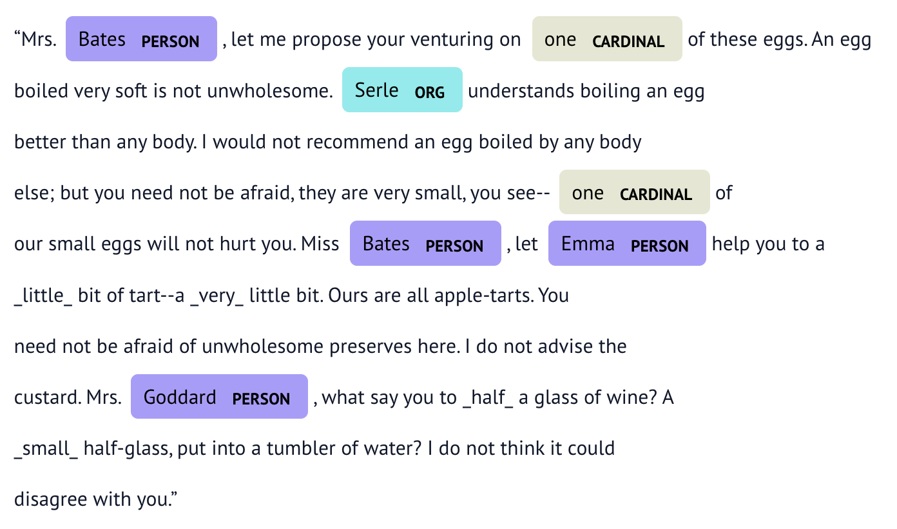
IOB Encoding: Marking Entity Spans
How does spaCy mark which tokens belong to a multi-word entity? With IOB tags:
| Tag | Meaning | Example |
|---|---|---|
B |
Beginning of an entity | ('Harriet', 'B', 'PERSON') |
I |
Inside (continuing) an entity | ('Smith', 'I', 'PERSON') |
O |
Outside — not part of any entity | ('was', 'O', '') |
So “Harriet Smith was late” becomes:
[('Harriet', 'B', 'PERSON'), ('Smith', 'I', 'PERSON'),
('was', 'O', ''), ('late', 'O', '')]The B marks the start of a span; subsequent tokens in the same span get I; everything else gets O. This lets spaCy reconstruct full multi-word names from the token stream.
NER in Action: Exploring a Novel
The Thursday activity used ner_nb.py to run NER on a chapter from Of Kings and Fools. Here’s the progression:
doc = nlp(textRaw) # process the whole chapter at oncesents = list(doc.sents) → a list of spaCy Span objects, one per sentence
sentWords = [[token.text for token in sent] for sent in sents] → a list of lists of strings — each inner list is one sentence broken into words
sentWordsPOS = [[(token.text, token.pos_) for token in sent] for sent in sents] → same structure, but each word is paired with its POS tag
ents_by_sent = [[(ent.text, ent.label_) for ent in sent.ents] for sent in sents] → for each sentence, a list of (entity_text, entity_type) pairs — only named entity tokens, not plain words
sentWordsNER = [[(token.text, token.ent_iob_, token.ent_type_) for token in sent] for sent in sents] → every token, annotated with its IOB tag and entity type (empty string for O tokens)
names = [ent.text for ent in doc.ents if ent.label_ == "PERSON"] → a flat list of every person-name mention in the whole chapter
Character Frequency: Who’s in This Book?
Once you have all the person mentions, you can count them:
from collections import Counter
name_counts = Counter(names)
top30 = dict(name_counts.most_common(30))The result is a frequency table of character mentions — essentially a cast list ranked by how much screen time each character gets. This is exactly the kind of insight that would take hours to compile by hand but runs in seconds computationally.
The activity also hinted at what’s coming in Week 14:
persons_by_sent = [
[ent.text for ent in sent.ents if ent.label_ == "PERSON"]
for sent in sents
]This groups characters by sentence — and when two characters appear in the same sentence, that’s evidence they interact. Build a graph where characters are vertices and co-appearances are edges, and you have a social network inferred from text.
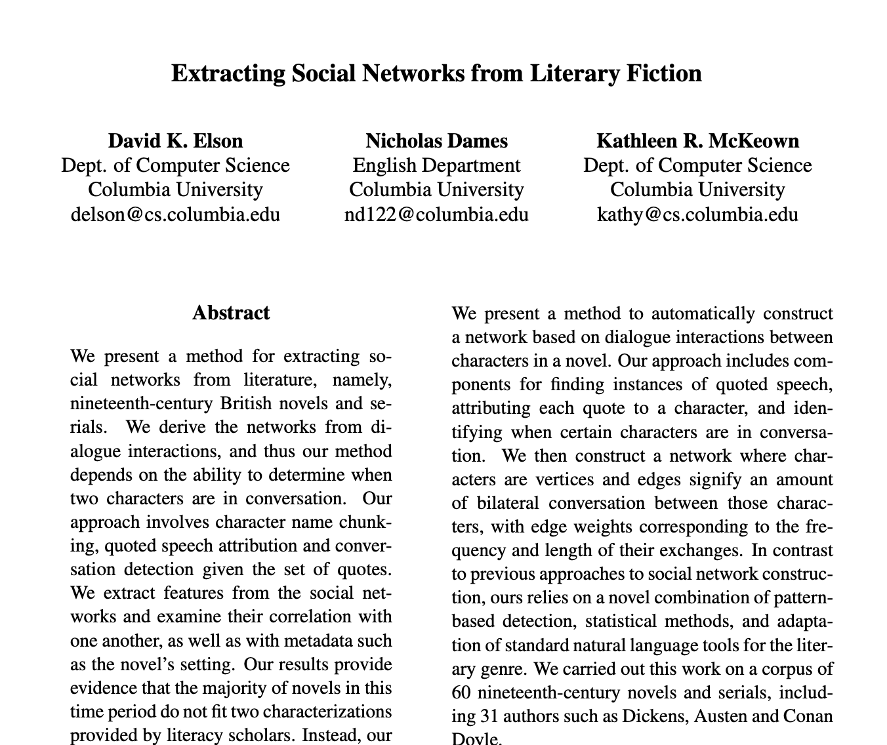
What’s Next?
In Week 14 we build on this: using NER to find all the character co-occurrences in a novel and draw the resulting social network as a graph. The pipeline is: text → NER → co-occurrence counting → graph → visualization. You’ve now seen every piece of that pipeline.
And then it’s the last class of the term — which means it’s time to talk about the bigger picture of what you’ve built this semester and what to do with it next.